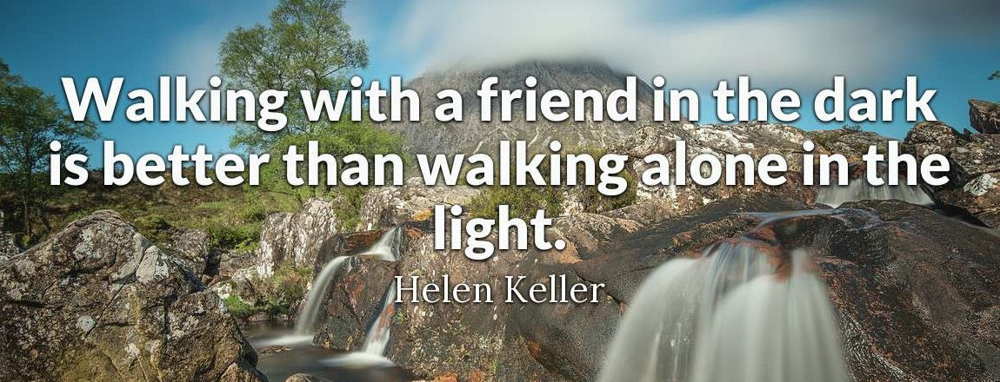
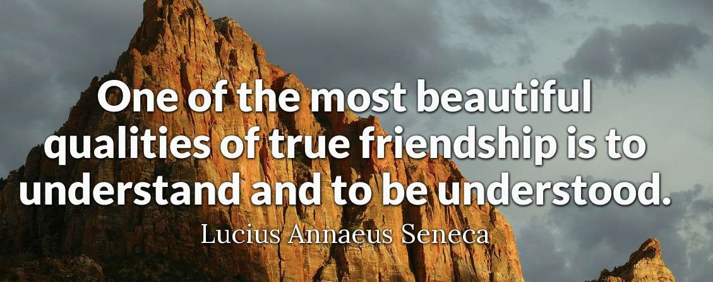
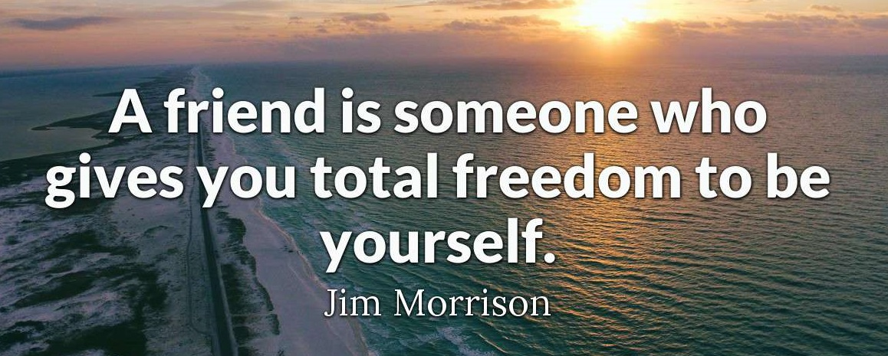
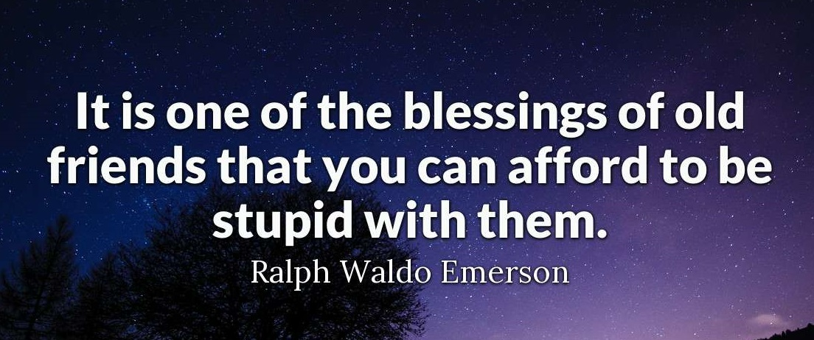
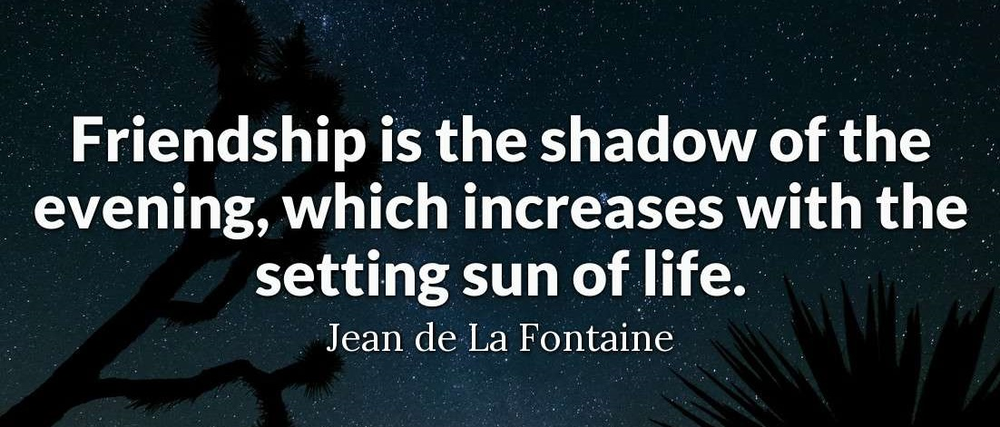
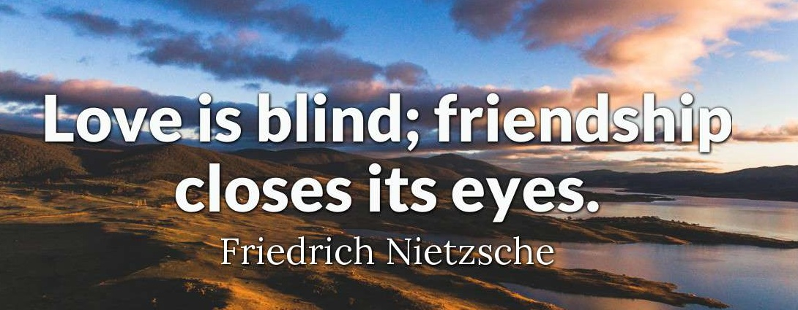

Friendship Quotes:

The greatest healing therapy is friendship and love.

Walking with a friend in the dark is better than walking alone in the light.
Share your smile with the world. It's a symbol of friendship and peace.

One of the most beautiful qualities of true friendship is to understand and to be understood.
There is nothing on this earth more to be prized than true friendship.

There is only one happiness in this life, to love and be loved.

It is one of the blessings of old friends that you can afford to be stupid with them.

Friendship is the shadow of the evening, which increases with the setting sun of life.

Love is blind; friendship closes its eyes.
For More Quotes You Can Visit to:More friendship Quotes